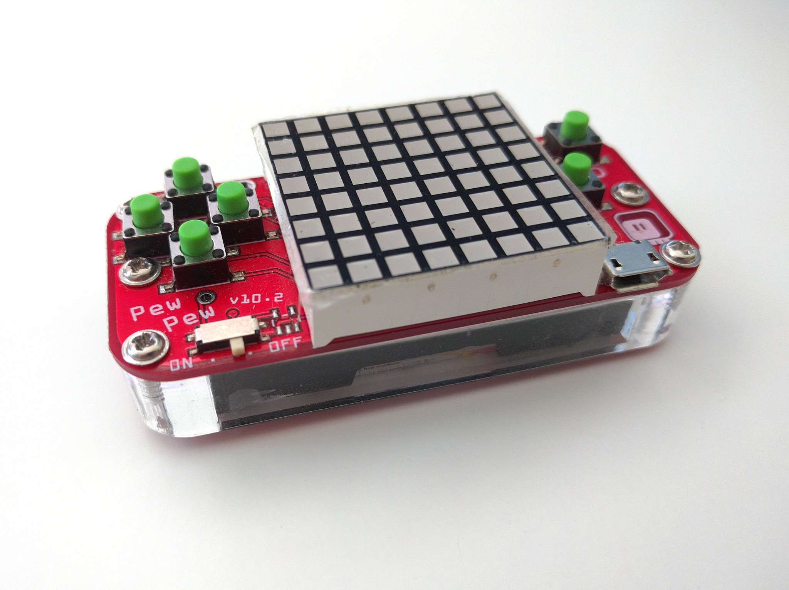
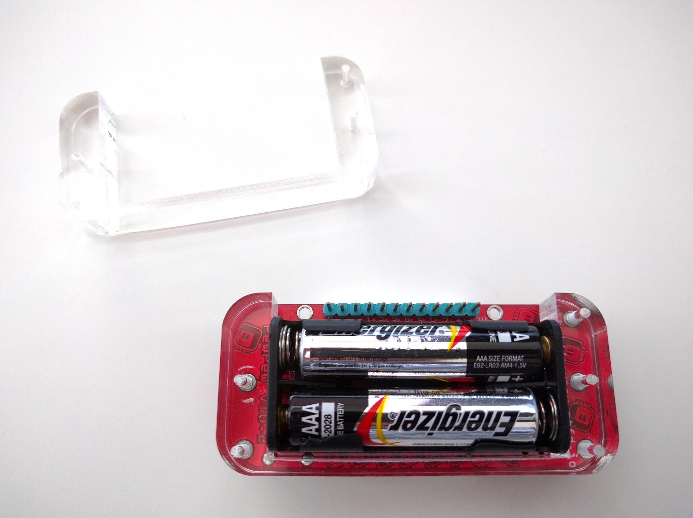

Laser-cut Backs¶
Published on 2019-06-07 in PewPew Standalone.
I was making an order at @Elecrow again, so I added the order for the laser-cut backs for PewPew again — this time with the size specified, so that there will be no confusion. Today they arrived:

They work pretty well, even though the battery still sticks some millimeter or two. It was the thickest acrylic available, at 10mm. I could probably stick something rubbery or wooden in there, to get that last millimeter and to make it nicer to hold. Or actually cut them from 12mm wood or cork — that would work very well too! A view from the bottom:

In any case, I’m adding the PDF file to the files section for download, and I will add an option for this to the Tindie store.\